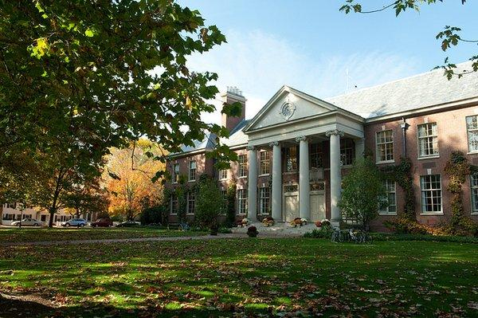
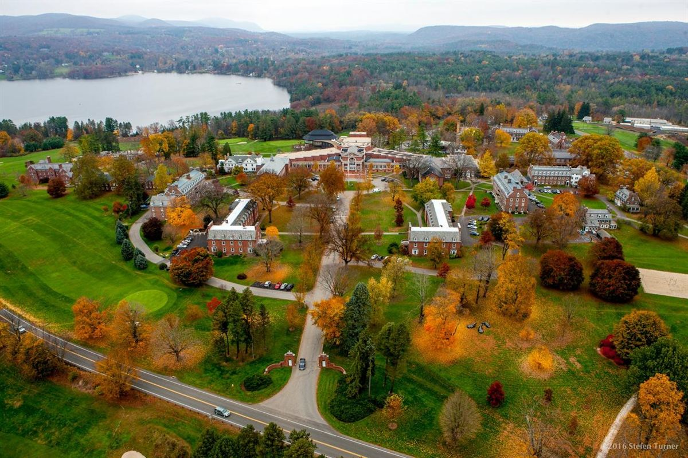

1. 주요 지역과 국제학교
· 파리 시내 (Paris)
인터내셔널 스쿨 오브 파리(ISP, 16구·IB 일관), 에콜 제닌 마뉘엘(15구·불영 이중언어·IB/프랑스 바칼로레아 병행). 한국 가정은 16구·15구와 서쪽 근교에 많이 거주합니다.
· 파리 서쪽 근교
아메리칸 스쿨 오브 파리(ASP, 생클루·미국식 AP+IB), 브리티시 스쿨 오브 파리(크루아시쉬르센·영국식), 그리고 생제르맹앙레 국제 리세(공립 국제학교·한국어 섹션 운영)가 이 축에 모여 있습니다.
· 기타 도시
리옹·니스·툴루즈에도 국제 섹션을 둔 학교들이 있으며, 주재 지역에 따라 선택지가 달라집니다.

국제학교 캠퍼스 (자료사진)
2. 커리큘럼 — 영어 국제학교와 프랑스식이 공존합니다
· IB — ISP 등. PYP/MYP/DP 체계, 고등에서 IB Math AA/AI 선택과 IA·EE·TOK 관리가 핵심.
· 미국식·AP — ASP 등. 알지브라 → 지오메트리 → 프리캘큘러스 → AP 미적분, GPA 누적.
· 영국식·IGCSE/A-Level — 브리티시 스쿨 오브 파리.
· 프랑스식·국제 섹션 — 국제 리세와 이중언어 학교는 프랑스 교육과정에 국제 바칼로레아(BFI, 구 OIB) 섹션을 얹는 구조입니다. 수업의 상당 부분이 프랑스어로 진행되므로 프랑스어 실력이 곧 내신이 됩니다.
3. G1~G12 학년별 준비 로드맵
영어 리딩·라이팅 기초와 수학 영어 용어. 프랑스어 노출이 시작되는 시기 — 부담 없는 회화·소리 중심으로 시작하고, 한국어(모국어) 유지도 함께 챙깁니다.
알지브라·지오메트리 시작(IB 학교는 MYP). 영어 에세이 구조 훈련과 함께 프랑스어를 DELF A2~B1 급수로 관리하면 고등 내신이 편해집니다.
미국식은 GPA 누적 시작, IB는 DP 과목 선택 준비, 영국식은 IGCSE. 수학은 알지브라 2·프리캘큘러스, 과학은 물리·화학·생물 분화.
IB DP / AP / A-Level / BFI 본과정. IB 수학 IA·EE, AP 미적분, SAT/ACT, 대학 지원 에세이·인터뷰. 프랑스어 트랙은 DELF B2~DALF가 목표가 됩니다.

국제학교 캠퍼스 (자료사진)
4. 과목별 준비 방법 — 전 과목 관리
알지브라 1·2 · 지오메트리 · 프리캘큘러스 · 미적분(Calculus) · AP Calculus AB/BC · IB Math AA/AI(HL·SL) · IGCSE/A-Level Maths. 영어 용어와 서술형 풀이를 함께 잡습니다.
리딩 · 에세이 라이팅·첨삭 · 문학 분석 · IB English A/B · 확장에세이(EE) · AP English · SAT/ACT · 대학 지원 에세이 · 면접(인터뷰).
물리·화학·생물 (IB/AP/IGCSE). 개념+영어 용어, 랩 리포트와 과학 IA 관리.
프랑스어 내신(IB French B/ab initio)·DELF(A1~B2)·DALF — 프랑스어 과외 안내 참고. 한국어(IB Korean A)와 귀국 대비 한국 수학·국어 병행 관리.
5. 입학·편입 준비
· 입학시험 — 영어(리딩·라이팅), 수학 배치고사, 인터뷰, 이전 성적. 이중언어·리세 계열은 프랑스어 수준 평가가 추가됩니다.
· 편입 — 파리 인기 학교는 학년별 자리가 제한적입니다. 특히 국제 리세 한국어 섹션은 지원 서류와 시기가 정해져 있으니 1년 전부터 준비하는 것이 안전합니다.
6. 프랑스의 현실 — 한국식 학원이 거의 없습니다
파리는 싱가포르나 도쿄와 달리 한인 학원 인프라가 매우 얇습니다. IB·AP 커리큘럼을 한국어로 설명해 줄 곳은 사실상 없고, 현지 튜터는 영어나 프랑스어로만 수업합니다. 개념이 안 잡힌 상태에서 언어 부담까지 겹치면 아이가 두 배로 힘들어집니다.
그래서 프랑스 주재원 가정은 한국 선생님과의 1:1 화상 수업을 주로 주말(현지 오전 = 한국 오후~저녁)과 현지 등교 전 아침(= 한국 오후) 시간대로 편성합니다. 시차 7~8시간을 오히려 규칙적인 주말 학습 루틴으로 활용하는 방식입니다.
7. 귀국 대비 — 최소 6개월 전부터
· 한국 학교 편입 — 국제학교에서 다루지 않은 한국 수학 교과의 빈틈을 메워야 합니다.
· 국내 국제학교 진학 — 채드윅 송도·NLCS 제주·SFS 등의 입학시험(수학 배치고사 + 영어 에세이 + 인터뷰) 준비.
· 재외국민 특례 — 체류 기간 요건과 서류는 특례입학 총정리에서 확인하세요.